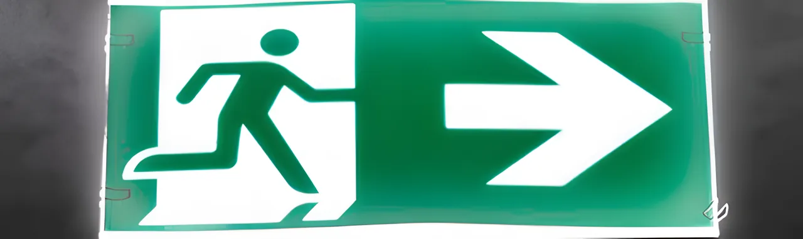

Recarga e manutenção de extintores
Todos os tipos, com selo do INMETRO. Retiramos no seu imóvel, deixamos reservas no lugar e devolvemos em até 7 dias úteis*. Obrigatória a cada 12 meses.
Solicitar orçamentoGuarujá
A oficina de recarga da Baluarte fica na Av. Piassaguera, em Guarujá. Como os extintores são recarregados aqui mesmo, na cidade, a equipe chega rápido para retirar, entregar e testar as mangueiras no local.
Atendemos os prédios da orla, os condomínios horizontais, o comércio do centro e de Vicente de Carvalho, além de galpões e empresas ligadas ao porto. A Prefeitura de Guarujá está entre os clientes que já confiaram na Baluarte.
Serviços
Todos os tipos, com selo do INMETRO. Retiramos no seu imóvel, deixamos reservas no lugar e devolvemos em até 7 dias úteis*. Obrigatória a cada 12 meses.
Solicitar orçamentoFeito no seu prédio, com equipamento automático. Obrigatório todo ano.
Solicitar orçamento
Placas de rota de fuga, saída e equipamentos, conforme o Corpo de Bombeiros.
Solicitar orçamentoLevantamento dos equipamentos do imóvel, sem custo e sem compromisso.
Solicitar orçamentoNovos, com orientação sobre o tipo e a quantidade certos para o seu imóvel.
Solicitar orçamentoComo funciona
Prazo garantido por escrito: se não devolvermos em até 7 dias úteis*, você ganha 20% de desconto no próximo serviço*.
Agendar vistoria grátisDiga onde fica o imóvel e, se puder, mande a foto da etiqueta de um extintor.
Nosso técnico avalia tudo no local e você recebe o orçamento sem compromisso.
Levamos seus extintores, deixamos os reservas e testamos as mangueiras no prédio.
Os extintores voltam recarregados, com selo do INMETRO. Em 12 meses, avisamos você.
Dúvidas frequentes
Se a sua dúvida não estiver aqui, nossa equipe responde pelo WhatsApp.
Falar com um técnicoSim. A sede própria e a oficina de recarga da Baluarte ficam na Av. Piassaguera, 1189, em Guarujá. Atendemos de segunda a sexta, das 8h às 12h e das 13h15 às 18h.
Até 7 dias úteis*, com garantia: se atrasarmos, você ganha 20% de desconto no próximo serviço*. Enquanto isso, deixamos extintores reservas no lugar dos seus.
Sim. Retirada e entrega são grátis em todos os bairros de Guarujá, inclusive em Vicente de Carvalho.
Sim. Combinamos a retirada com o zelador ou a administradora e avisamos no WhatsApp quando a próxima manutenção estiver chegando.
Depende da quantidade e do tipo de extintor. A vistoria e o orçamento são grátis: mande a foto da etiqueta no WhatsApp e já adiantamos uma estimativa.
Onde atendemos
Guarujá está em destaque no mapa. Clique em outro ponto para ver a unidade e clique de novo para abrir a página dela.
Clique em um ponto para ver a unidade
Também atendemos Cubatão, Mongaguá, Itanhaém e Peruíbe. Ver toda a região
Um técnico avalia tudo no local e você recebe o orçamento sem compromisso.
Contato